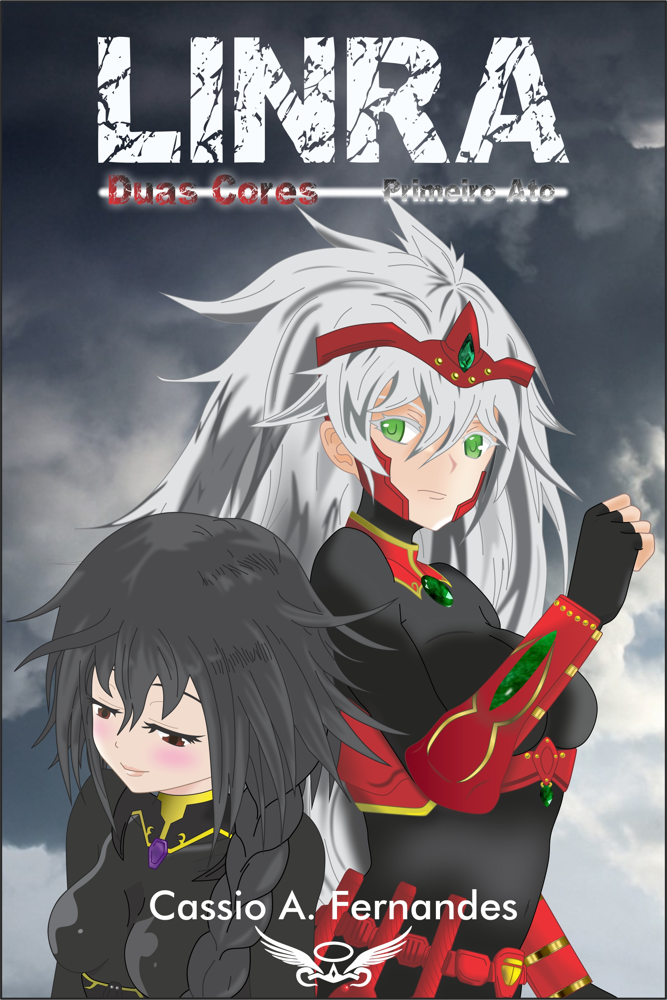

Sobre Linra: Séculos após a Grande Guerra, são inúmeros os eventos que mudaram Linra até seu estado atual. Cada história, batalha, ambição e decisão foram os pincéis que pintaram o novo quadro deste mundo. Porém, ainda que outros autores tenham começado esta obra, quem irá dar as últimas pinceladas são aqueles escolhidos pelo maior de todos os artistas: O Destino. Os protagonistas deste arco lutam por suas liberdades. Lutam pela paz em suas vidas! O Destino pode ter preparado toda a pintura até aqui, mas estes são indivíduos que se negam a aceitar as tragédias que lhes foram impostas!